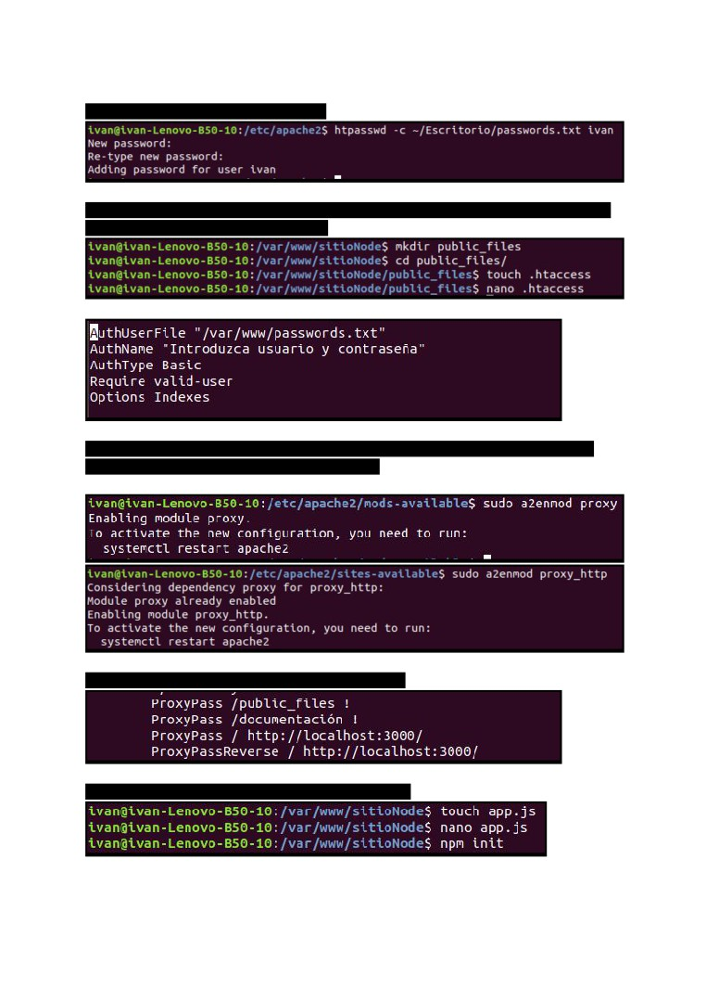
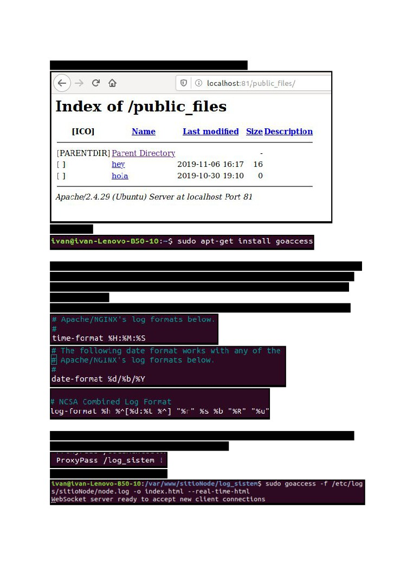

APACHE
1-SERVIDOR Php
Para crear el nuevo site lo primero que debemos hacer es copiar el site default de la carpeta
/etc/apache2/sites-available
Antes de configurar nada vamos a agregar el puerto 82 en el ports.conf para que podamos
usar este puerto en el site que vamos a crear
Ahora vamos a configurar nuestro site. Para el site 1 el archivo debe quedar asi:
Lo que he hecho es asignar el puerto 82 a este site, se ha asignado la carpeta
/var/www/sitioPhp (Que debe ser creada), se ha cambiado la ruta del log, se ha cambiado el
formato de log que debe ser defenido en la fichero de configuración principal y se ha
agregado una pagina de error 404 personalizada que muestra el mensaje ‘Pagina no
encontrada’.
Vamos a agregar el formato perosonalizado al fichero de configuracion de apache
Para poder usar php en el site vamos a necesitar instalar el modulo y activarlo
Instalamos el php con :
sudo apt-get install php7.2
Y ademos instalamos el mod para apache
sudo apt-get install libapache2-mod-php7.2
En principio cuando instalamos el libapache2-mod-php7.2 el modulo se activa
automaticamente pero en caso de que no lo podemos activar con:
sudo a2enmod php7.2
Ahora creamos un simple php en la carpeta del site
Ahora activamos el site
Y actualizamos el apache con el comando que nos indican
Accedemos a localhost:82 y veremos que nuestro site esta funcionando correctamente
2-SERVIDOR NODE
Para empezar a crear el site de node vamos a copiar el archivo de sitioPhp y lo vamos a
configurar para que se ajuste a los requerimientos del site de node
Esta es la configuracion que demomento debe quedar
Se ha establecido la carpeta /var/www/sitioNode como la zona donde esta el contenido de la
web. Se ha establecido una redireccion en /documentación que te lleva a la pagina de
documentación de node. Se ha inidicado la ruta donde se guardara el fichero de logs.
Finalmente hemos habilitado el AllowOverride para poder crear un .htaccess

Vamos a crear un archivo de contraseñas
Vamos a crear el documento public_files y dentro de el vamos a crear un .htaccess con las
directivas necesarias para la autorización.
Para realizar el enrutamiento del puerto 81 al 3000 que es done tendremos funcionando
nuestro nodejs vamos a activar el modulo de proxy
Y vamos a configurar el site agregando estas directivas
Con todo configurado vamos a crear el servidor de node
Vamos a encender el servidor de node
Ahora vamos a activar el site que hemos creado y a hacer un reload a apache
Como podemos ver ahora estamos accediendo al servidor de node que esta en el puerto
3000 desde el puerto 81.
Ahora vamos a probar la redirecion de documentación a la pagina de documentación de
node.
Y finalmente vamos a acceder a public_files
Si ponemos las credenciales correctas se nos mostrara el index.html

Si quitamos el index.html podremos visualizar el contenido
GOACCESS
Lo primero que necesitamos es configurar algunos formatos en el fichero /etc/goaccess.conf
El formato que yo he configurado es similar al formato combined de apache (Es necesario
que el formato sea el mismo asi que he vuelo a poner el formato combined a los logs del
servidor de node)
En el archivo de configuración tenemos que descomentar los formatos que vamos a usar
Ahora para poder ver en nuestro servidor el reporte vamos a crear la carpeta log_sistem y
vamos a configurar para que el proxy ignore esa ruta
Y ahora ejecutamos este comando
Despues de acceder al servidor para generar reportes accedemos a